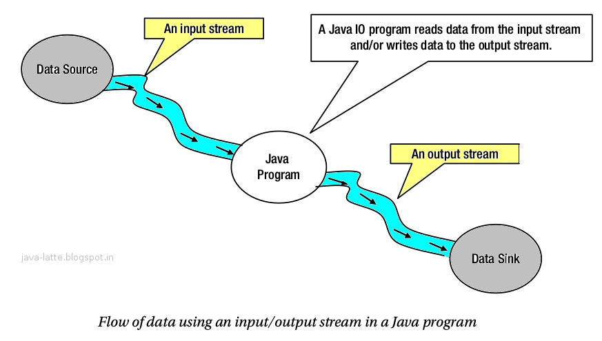
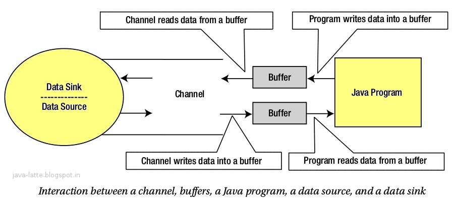
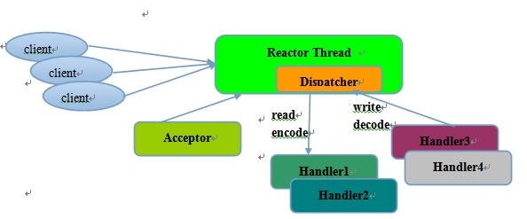
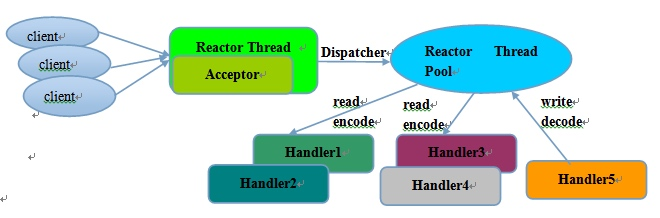
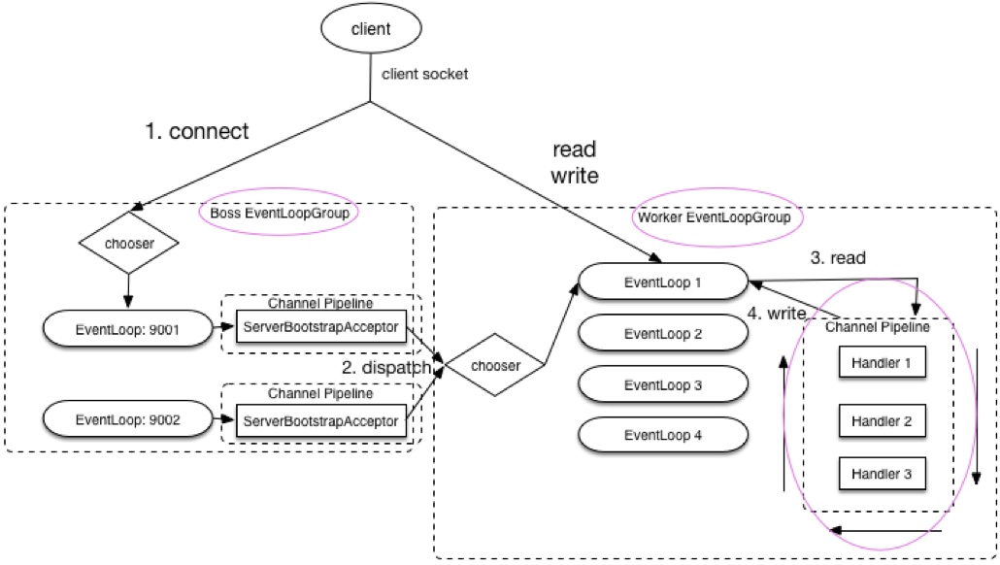
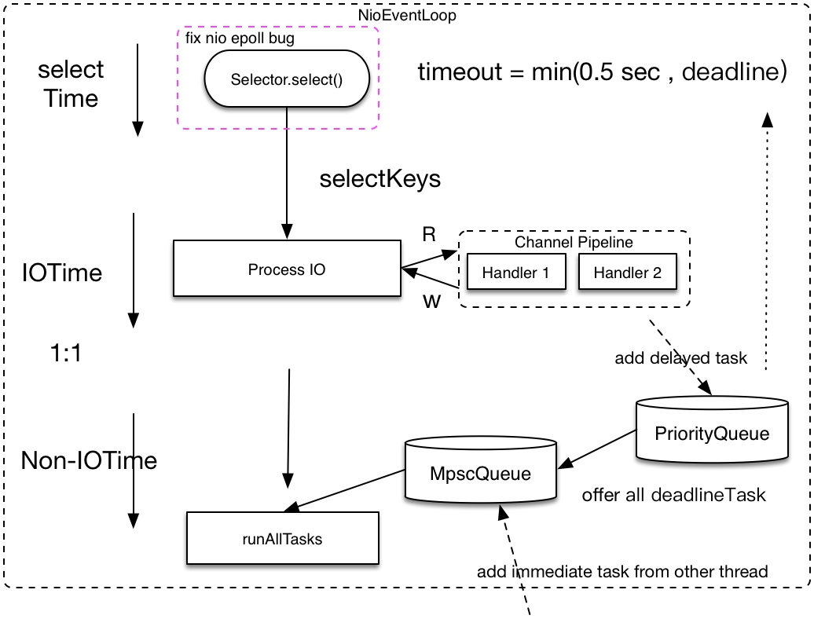

<!doctype html>
<html class="no-js" lang="en">
  <head>
    <meta charset="utf-8" />
    <meta name="viewport" content="width=device-width, initial-scale=1.0" />
    <title>
    
  深入浅出Netty - EventLoop, EventLoopGroup - Junkman
  
  </title>
  
  
  <link href="atom.xml" rel="alternate" title="Junkman" type="application/atom+xml">
    <link rel="stylesheet" href="asset/css/foundation.min.css" />
    <link rel="stylesheet" href="asset/css/docs.css" />
    <script src="asset/js/vendor/modernizr.js"></script>
    <script src="asset/js/vendor/jquery.js"></script>
  <script src="asset/highlightjs/highlight.pack.js"></script>
  <link href="asset/highlightjs/styles/github.css" media="screen, projection" rel="stylesheet" type="text/css">
  <script>hljs.initHighlightingOnLoad();</script>
<script type="text/javascript">
  function before_search(){
    var searchVal = 'site:panlw.github.io ' + document.getElementById('search_input').value;
    document.getElementById('search_q').value = searchVal;
    return true;
  }
</script>
  </head>
  <body class="antialiased hide-extras">
    
    <div class="marketing off-canvas-wrap" data-offcanvas>
      <div class="inner-wrap">


<nav class="top-bar docs-bar hide-for-small" data-topbar>


  <section class="top-bar-section">
  <div class="row">
      <div style="position: relative;width:100%;"><div style="position: absolute; width:100%;">
        <ul id="main-menu" class="left">
        
        <li id=""><a target="self" href="index.html">Home</a></li>
        
        <li id=""><a target="_self" href="archives.html">Archives</a></li>
        
        </ul>

        <ul class="right" id="search-wrap">
          <li>
<form target="_blank" onsubmit="return before_search();" action="http://google.com/search" method="get">
    <input type="hidden" id="search_q" name="q" value="" />
    <input tabindex="1" type="search" id="search_input"  placeholder="Search"/>
</form>
</li>
          </ul>
      </div></div>
  </div>
  </section>

</nav>

        <nav class="tab-bar show-for-small">
  <a href="javascript:void(0)" class="left-off-canvas-toggle menu-icon">
    <span> &nbsp; Junkman</span>
  </a>
</nav>

<aside class="left-off-canvas-menu">
      <ul class="off-canvas-list">
       
       <li><a href="index.html">HOME</a></li>
    <li><a href="archives.html">Archives</a></li>
    <li><a href="about.html">ABOUT</a></li>

    <li><label>Categories</label></li>

        
            <li><a href="Infra.html">Infra</a></li>
        
            <li><a href="Coding.html">Coding</a></li>
        
            <li><a href="Solution.html">Solution</a></li>
        
            <li><a href="Archtect.html">Archtect</a></li>
         

      </ul>
    </aside>

<a class="exit-off-canvas" href="#"></a>


        <section id="main-content" role="main" class="scroll-container">
        
       

 <script type="text/javascript">
  $(function(){
    $('#menu_item_index').addClass('is_active');
  });
</script>
<div class="row">
  <div class="large-8 medium-8 columns">
      <div class="markdown-body article-wrap">
       <div class="article">
          
          <h1>深入浅出Netty - EventLoop, EventLoopGroup</h1>
     
        <div class="read-more clearfix">
          <span class="date">2018/6/1</span>

          <span>posted in&nbsp;</span> 
          
              <span class="posted-in"><a href='Network.html'>Network</a></span>
           
         
          <span class="comments">
            

            
          </span>

        </div>
      </div><!-- article -->

      <div class="article-content">
      <blockquote>
<p>DECEMBER 24 2016<br/>
<a href="https://caorong.github.io/2016/12/24/head-first-netty-1/">https://caorong.github.io/2016/12/24/head-first-netty-1/</a></p>

<p>本文由 <a href="http://ksria.com/simpread/">简悦 SimpRead</a> 转码， 原文地址 <a href="https://caorong.github.io/2016/12/24/head-first-netty-1/">https://caorong.github.io/2016/12/24/head-first-netty-1/</a></p>
</blockquote>

<p>近年来netty 十分流行，至于为何那么流行，因为它性能好，能更有效的利用系统资源。</p>

<p>但是， netty 很容易上手， 但是很多时候却无法理解设计的初衷， 比如为什么会有 EventLoop 这个东东， 本文从历史阐述原因。</p>

<h2 id="toc_0"><a href="#%E5%90%8C%E6%AD%A5%E7%BD%91%E7%BB%9C%E6%A8%A1%E5%9E%8B" title="同步网络模型"></a>同步网络模型</h2>

<p>首先说说同步模型， 也就是常说的 bio， bio 是基于 stream 的。 网上找到一个图如下</p>

<p></p>

<p>从图可知，对于bio 来说，我的程序何时处理完需要靠 看 datasource 何时发完数据。</p>

<p>这是非常坑爹的， 举个例子， 如果我的服务是一个多线程的 bio 的服务(比如 10个线程)，然后某个黑客建10个 telnet 连上你的server， holding住 不发数据，那么你的服务就down了。</p>

<p>那么如何解决这种问题？ 如果 waiting client 发的数据不阻塞 worker 线程不就行了？</p>

<p>于是出现了 异步网络模型</p>

<h2 id="toc_1"><a href="#%E5%BC%82%E6%AD%A5%E7%BD%91%E7%BB%9C%E6%A8%A1%E5%9E%8B" title="异步网络模型"></a>异步网络模型</h2>

<p>异步网络模型， 也就是非阻塞IO， 在java 中由于 jdk1.4 之后才被引入所以被称之为 Nio (New IO)</p>

<p>网上同样找到个图</p>

<p></p>

<p>由图可知， 实现异步的原理是 系统帮你给每一个连接(channel) 都维护了一个 <code>buffer</code>。<br/>
将 client 发来的数据暂存到 <code>buffer</code> 中, 待 java 进程需要的时候一次性做一次内存拷贝，在 java 进程中使用。</p>

<p>当然， 写出也是同样的 写到 <code>buffer</code> 中，当 <code>buffer</code> 满 或者 手动调用 <code>flush</code> 写出去。</p>

<p>下面有个简单的 非阻塞 echo server demo， 当读到 q 时关闭连接。</p>

<pre><code class="language-java">ServerSocketChannel serverSocketChannel = ServerSocketChannel.open();

serverSocketChannel.socket().bind(new InetSocketAddress(9999));
serverSocketChannel.configureBlocking(false);

final List&lt;SocketChannel&gt; socketChannelList = Lists.newLinkedList();

new Thread(new Runnable() {
  @Override
  public void run() {
    while (true) {
      // 处理 每个连接是否可读, 这里的逻辑是 读4个字节后切断连接
      for (SocketChannel socketChannel : Lists.newArrayList(socketChannelList)) {
        try {
          ByteBuffer buf = ByteBuffer.allocate(4);
          int readed = socketChannel.read(buf);
          System.out.println(readed);
          System.out.println(Arrays.toString(buf.array()));
          if (readed &gt; 0 &amp;&amp; buf.array()[0] == &#39;q&#39;) {
            // close
            socketChannel.close();
            // remove from list
            socketChannelList.remove(socketChannel);
          }
        } catch (Throwable e) {
          e.printStackTrace();
        }
      }
      try {
        Thread.sleep(100);
      } catch (InterruptedException e) {
      }
    }
  }
}, &quot;server-handler-thread&quot;).start();

// 等待新连接连进来
while (true) {
  SocketChannel socketChannel = serverSocketChannel.accept();
  if (socketChannel != null) {
    socketChannelList.add(socketChannel);
  }
  Thread.sleep(1000);
}
</code></pre>

<p>简单分析下上面的代码，</p>

<ol>
<li> 由于 accept 是非阻塞的， 所以我们要一直轮询 判断是否有新连接进来。</li>
<li> 连接进来后，由于我们不知道 client 何时能发完数据， 所以我们维护了一个列表 <code>socketChannelList</code> 定期去轮询列表，看是否有数据可读。</li>
</ol>

<p>但是后来大家发现， 每当用 nonblocking socket 的时候都要做类似的操作， 于是想把它们提出来，提取成一个通用模块， 让代码实现更容易，</p>

<p>在 <a href="https://en.wikipedia.org/wiki/Berkeley_sockets">berkeley socket</a> 中这个模块被称为 select, poll, epoll. (后面2个是加强版)</p>

<p>而在java中， java 在他们之上抽象成 Selector</p>

<h2 id="toc_2"><a href="#Selector-select-poll-epoll" title="Selector(select, poll, epoll)"></a>Selector(select, poll, epoll)</h2>

<p>既然 select 是一个使用 nonblocking io 的通用封装， 那么在 linux 中， 为什么要有 select, poll, epoll 这么多的选择呢？</p>

<p>我猜测，最早其实只有 select， 然后由于linux 是一个开源， 所以， 后来别人实现了性能更好的 poll, 再之后 epoll 也是这样。</p>

<p>但是, 由于它们都在 linux 2.6.12 之前就已经被实现了， 在github上 都看不到具体提交历史了。。</p>

<p><a href="https://github.com/torvalds/linux/commits/a379f71a30dddbd2e7393624e455ce53c87965d1/fs/select.c?after=Y3Vyc29yOqN59xow3dvS5zk2JORVzlPIeWXRKzY5">select.c</a>,<br/>
<a href="https://github.com/torvalds/linux/commits/5924bbecd0267d87c24110cbe2041b5075173a25/include/linux/poll.h">poll.h</a>,<br/>
<a href="https://github.com/torvalds/linux/commits/5924bbecd0267d87c24110cbe2041b5075173a25/include/linux/eventpoll.h">eventpoll.h</a></p>

<p>我们再来看看 使用了 selector 后的非阻塞 IO 的编码, 同样实现一个 echo server</p>

<pre><code class="language-java">Selector selector = Selector.open();
ServerSocketChannel servChannel = ServerSocketChannel.open();
servChannel.configureBlocking(false);
// 建立一个server socket，到本地端口9999， backlog 1024
servChannel.socket().setReuseAddress(true);
servChannel.socket().bind(new InetSocketAddress(9999), 1024);
// selector 关心 server 上的 ACCEPT 事件
servChannel.register(selector, SelectionKey.OP_ACCEPT); 

while (start) {
  try {
    // 阻塞等待 直到有IO事件可读(系统IO事件队列不为空)
    selector.select();
    // 获取 事件 以及 事件所对应的 channel (client server 的连接)
    Set&lt;SelectionKey&gt; selectedKeys = selector.selectedKeys();
    Iterator&lt;SelectionKey&gt; it = selectedKeys.iterator();
    SelectionKey key = null;
    while (it.hasNext()) {
      key = it.next();
      it.remove();
      try {
        if (key.isValid()) {
          // OP_ACCEPT 事件 表示有个新client 完成了三次握手。连接上了本服务器
          if (key.isAcceptable()) {
            // Accept the new connection
            ServerSocketChannel ssc = (ServerSocketChannel) key.channel();
            SocketChannel sc = ssc.accept();
            sc.configureBlocking(false);
            // 将该连接的可读事件 注册到 selector， 到时候他发起请求的时候，我会收到新事件
            sc.register(selector, SelectionKey.OP_READ);
          }
          // OP_READ 事件 说明 client 发的数据已经发到了系统缓冲区，server 可以去读了。
          if (key.isReadable()) {
            SocketChannel sc = (SocketChannel) key.channel();
            // 分配用户台空间, 将数据从内核态 拷贝到 用户态
            ByteBuffer readBuffer = ByteBuffer.allocate(4);
            int readBytes = sc.read(readBuffer);
            if (readBytes &gt; 0) {
              // 切换读写模式 详见下面的图, 表示自己目前可以读 [position, limit]
              readBuffer.flip();
              byte[] bytes = new byte[readBuffer.remaining()];
              // 将buffer 数据拷贝到 bytes 数组
              // 如果这里只收到一半的数据怎么办？
              String body = new String(bytes, &quot;UTF-8&quot;);
              System.out.println(body);
              // 将 read的数据 写回去
              ByteBuffer writeBuffer = ByteBuffer.allocate(bytes.length);
              writeBuffer.put(bytes);
              writeBuffer.flip();
              sc.write(writeBuffer);
            } else if (readBytes &lt; 0) {
              // 对端链路关闭
              key.cancel();
              sc.close();
            } else
              ;
          }
        }
      } catch (Exception e) {
        if (key != null) {
          key.cancel();
          if (key.channel() != null)
            key.channel().close();
        }
      }
    }
  } catch (Exception e) {
    throw e;
  }
}
</code></pre>

<pre><code class="language-sh">~ ᐅ nc localhost 9999
1
1
2
2
</code></pre>

<p>但是， 很奇怪的是，代码更长了。。。</p>

<p>因为其实真正的 selector 将所有的socket 的时间都封装进去了。</p>

<p>带来的结果是， java 层的代码 只要一个线程就能处理所有了，(我之前的实现需要2个线程)。</p>

<p>当然还有个问题是， 及时用了 selector， 我们依然认为代码可读性非常差， 代码容易写错。</p>

<p>于是， netty 登场了， 他在 selector 之上， 又封装了一层， 让我们先看下 同样实现 netty 的代码。</p>

<h2 id="toc_3"><a href="#netty-echo-server" title="netty echo server"></a>netty echo server</h2>

<pre><code class="language-java">public class Netty4Demo {
  public class EchoHandler extends SimpleChannelInboundHandler {
    @Override
    public void channelRead0(ChannelHandlerContext ctx, Object msg) throws Exception {
      // 为什么 这里可以强转String？
      String in = (String) msg;
      System.out.print(in);
      // 将数据写回
      ctx.writeAndFlush(in);
    }
  }

  public void run() throws Exception {
    EventLoopGroup acceptGroup = new NioEventLoopGroup(1); // 指定 Acceptor 线程池大小
    EventLoopGroup ioGroup = new NioEventLoopGroup(1); // 指定 NIO线程池大小
    try {
      ServerBootstrap b = new ServerBootstrap(); // 创建 ServerBootstrap 对象，他是Netty 用于启动NIO 服务端的辅助启动类，目的是降低服务端的开发复杂度。
      b.group(acceptGroup, ioGrou).channel(
          NioServerSocketChannel.class) // 指定使用 java 的NioServerSocketChannel
          .childHandler(new ChannelInitializer&lt;SocketChannel&gt;() { // 创建 IOThread 的 pipeline
            @Override
            public void initChannel(SocketChannel ch) throws Exception {
              ch.pipeline()
                .addLast(new StringDecoder())
                .addLast(new StringEncoder()); // 添加echo Handler
                .addLast(new EchoHandler())
            }
          }).option(ChannelOption.SO_BACKLOG, 128)          // server socket config backlog 设置为 128
          .childOption(ChannelOption.SO_KEEPALIVE, true); // client socket config 设置 keepalive = true
      // 绑定端口，开始接收进来的连接
      ChannelFuture f = b.bind(9999).sync(); // 同步等待绑定本地端口

      // 等待服务器  socket 关闭 。
      // 在这个例子中，这不会发生，但你可以优雅地关闭你的服务器。
      f.channel().closeFuture().sync();
    } finally {
      // 释放两个线程池
      acceptGroup.shutdownGracefully();
      ioGrou.shutdownGracefully();
    }
  }

  public static void main(String[] args) throws Exception {
    new Netty4Demo().run();
  }
}
</code></pre>

<pre><code class="language-sh">~ ᐅ nc localhost 9999
1
1
2
2
3
3
</code></pre>

<p>代码短了一些， 关键是少了很多 if 判断， 代码可读性更好了。</p>

<p>但是， 可读性提高(抽象)的同时， 又带出了了问题， EventLoop 是什么 , EventloopGroup 是什么？ 为什么要有它们？</p>

<p>这里要解释以上的问题， 要先从 线程模型说起</p>

<h2 id="toc_4"><a href="#%E7%BA%BF%E7%A8%8B%E6%A8%A1%E5%9E%8B" title="线程模型"></a>线程模型</h2>

<p>首先是 单线程模型， 如下图</p>

<p></p>

<p>上面直接用 selector 实现的 echo server 就是单线程模型，<br/>
还有类似存在 GIL 问题的语言比如 python 的 tornado 也是 单线程模型。</p>

<p>然后是多线程模型</p>

<p></p>

<p>多线程模型的区别就是 让接收连接 和 对连接读写的处理 分别用不同的线程处理。 比如上面的 echo server demo 就可以被称为一个 多线程模型。<br/>
只不过扩展性差了些。。。</p>

<p>netty 的 EventloopGroup 其实就是线程池， 通过它来配置 接收连接 和 处理连接读写 的线程池大小。</p>

<h2 id="toc_5"><a href="#netty-%E4%B9%8B-EventloopGroup" title="netty 之 EventloopGroup"></a>netty 之 EventloopGroup</h2>

<p></p>

<p>上图就是 EventLoopGroup 的大致模块图。</p>

<p>Boss EventloopGroup 和 worker EventloopGroup 分别 处理 接收连接， 和读写。</p>

<p>而 Eventloop 里则封装了类似上面单线程的 echo server 的模块下面会详细说。</p>

<p>对于开发者来说，主要关心紫色圈出部分。 其余的都已经封装完毕</p>

<p>有几个关键点。</p>

<ol>
<li> Eventloopsize 建议设置为 2 的次方，dispatch 使用位移，更快。</li>
<li> 侦听一个端口，只会绑定到 BossEventLoopGroup 中的一个 Eventloop，所以， BossEventLoopGroup 配置多个也无用。</li>
</ol>

<h2 id="toc_6"><a href="#EventLoop" title="EventLoop"></a>EventLoop</h2>

<p>如果只使用 tcp 和 异步阻塞的话主要关心以下2个 EventLoop (本文也只介绍这2个)</p>

<p>NioEventLoop - 基于java 原生nio</p>

<pre><code>level-triggered （水平触发）

</code></pre>

<p>EpollEventLoop - native jni 直接调用 epoll, only work on linux</p>

<pre><code>edge-triggered （边缘触发）更少的系统调用
C代码，更少GC，更少synchronized
暴露了更多的Socket配置参数

</code></pre>

<h3 id="toc_7"><a href="#%E6%B5%81%E7%A8%8B%E5%9B%BE" title="流程图"></a>流程图</h3>

<p></p>

<p>关键点</p>

<ol>
<li> 整个loop 干的事情就是 <code>select -&gt; processIO -&gt; runAllTask</code></li>
<li> 这是一个死循环</li>
<li> 那么这个loop 如何自己优雅退出？ noway，只能通过外部添加 CloseTask， 比如添加到 MpscQueue</li>
<li> deadline 为 定时任务的触发时间，避免 select 阻塞, 让 定时任务不能及时执行。</li>
<li> 在select 这一步 解决 epollbug</li>
</ol>

<p>关于解决 epoll bug的原理是 应当 “阻塞”的 select 变得不再阻塞。<br/>
所以只需要统计下 select 次数就行了</p>

<p>部分关键代码:</p>

<pre><code class="language-java">for(;;){
    int selectedKeys = selector.select(timeoutMillis); // select with timeout
    selectCnt ++;
    // 我由于 select 阻塞 而等待了 timeoutMillis 毫秒， 说明， 我阻塞了，说明没有bug
    if (time - TimeUnit.MILLISECONDS.toNanos(timeoutMillis) &gt;= currentTimeNanos) {
        selectCnt = 1;
    } else if (SELECTOR_AUTO_REBUILD_THRESHOLD &gt; 0 &amp;&amp;
            selectCnt &gt;= SELECTOR_AUTO_REBUILD_THRESHOLD) {
        // 在小于 timeoutMillis 毫秒的时间内 select 的次数超过了 阀值(512) 次
        rebuildSelector();
        selector = this.selector;

        selector.selectNow();// Select again
        selectCnt = 1;
        break;
    }
}
</code></pre>

<h2 id="toc_8"><a href="#other" title="other"></a>other</h2>

<h3 id="toc_9"><a href="#Selector-wakeup" title="Selector.wakeup()"></a>Selector.wakeup()</h3>

<p>java 的 Selector 在原生的 select api 之上 增加了个 Selector.wakeup()</p>

<p>她的目的是唤醒 阻塞在 <code>select()</code> 的线程, (通过写一个字节)</p>

<p>为什么要唤醒？ 什么时候需要唤醒？</p>

<ol>
<li>注册了新的 channel 或者事件。</li>
<li>channel 关闭， 取消注册。</li>
<li>优先级更高的事件触发（如定时器事件）， 希望及时处理。</li>
</ol>

<h4 id="toc_10"><a href="#%E5%8E%9F%E7%90%86" title="原理"></a>原理</h4>

<p>Linux上利用pipe调用创建一个管道，Windows上则是一个loopback的tcp连接。这是因为win32的管道无法加入select的fd set，将管道或者TCP连接加入select fd set。</p>

<p>wakeup往管道或者连接写入一个字节，阻塞的select因为有I/O事件就绪，立即返回。可见，wakeup的调用开销不可忽视。</p>

<p>之前看到的 coolshell 也分析过 –&gt; Java NIO类库Selector机制解析（<a href="http://blog.csdn.net/haoel/archive/2008/03/27/2224055.aspx">上</a>，<a href="http://blog.csdn.net/haoel/archive/2008/03/27/2224069.aspx">下</a>，<a href="http://blog.csdn.net/haoel/archive/2008/05/04/2379586.aspx">续</a>）</p>

<h1 id="toc_11"><a href="#reference" title="reference"></a>reference</h1>

<p><a href="http://www.infoq.com/cn/articles/netty-threading-model">http://www.infoq.com/cn/articles/netty-threading-model</a></p>

<p><a href="http://calvin1978.blogcn.com/articles/netty-performance.html">http://calvin1978.blogcn.com/articles/netty-performance.html</a></p>

<p><a href="http://calvin1978.blogcn.com/articles/netty-performance2.html">http://calvin1978.blogcn.com/articles/netty-performance2.html</a></p>

<p><a href="http://tech.meituan.com/nio.html">http://tech.meituan.com/nio.html</a></p>


    

      </div>

      <div class="row">
        <div class="large-6 columns">
        <p class="text-left" style="padding:15px 0px;">
      
        </p>
        </div>
        <div class="large-6 columns">
      <p class="text-right" style="padding:15px 0px;">
      
          <a  href="15277856731195.html" 
          title="Next Post: Functor and monad examples in plain Java">Functor and monad examples in plain Java &raquo;</a>
      
      </p>
        </div>
      </div>
      <div class="comments-wrap">
        <div class="share-comments">
          <script type="text/javascript" src="//s7.addthis.com/js/300/addthis_widget.js#pubid=ra-5ae58078c0d7b2ab"></script>

          

          
        </div>
      </div>
    </div><!-- article-wrap -->
  </div><!-- large 8 -->


 <div class="large-4 medium-4 columns">
  <div class="hide-for-small">
    <div id="sidebar" class="sidebar">
          <div id="site-info" class="site-info">
            
                <div class="site-a-logo"></div>
            
                <h1>Junkman</h1>
                <div class="site-des">“拾荒者”一词来自凯文・凯利的《失控》中关于机器学习的故事（“收集癖好机”如何完成他的收集工作）。</div>
                <div class="social">


<a target="_blank" class="github" target="_blank" href="https://github.com/panlw/" title="GitHub">GitHub</a>

  <a target="_blank" class="rss" href="atom.xml" title="RSS">RSS</a>
                
              	 </div>
          	</div>

             

              <div id="site-categories" class="side-item ">
                <div class="side-header">
                  <h2>Categories</h2>
                </div>
                <div class="side-content">

      	<p class="cat-list">
        
            <a href="Infra.html"><strong>Infra</strong></a>
        
            <a href="Coding.html"><strong>Coding</strong></a>
        
            <a href="Solution.html"><strong>Solution</strong></a>
        
            <a href="Archtect.html"><strong>Archtect</strong></a>
         
        </p>


                </div>
              </div>

              <div id="site-categories" class="side-item">
                <div class="side-header">
                  <h2>Recent Posts</h2>
                </div>
                <div class="side-content">
                <ul class="posts-list">
	      
		      
			      <li class="post">
			        <a href="15277861393795.html">深入浅出Netty - EventLoop, EventLoopGroup</a>
			      </li>
		     
		  
		      
			      <li class="post">
			        <a href="15277856731195.html">Functor and monad examples in plain Java</a>
			      </li>
		     
		  
		      
			      <li class="post">
			        <a href="15277854106004.html">我必须得告诉大家的 MySQL 优化原理</a>
			      </li>
		     
		  
		      
			      <li class="post">
			        <a href="15277850962764.html">Leaf——美团点评分布式ID生成系统</a>
			      </li>
		     
		  
		      
			      <li class="post">
			        <a href="15277835170976.html">蚂蚁通信框架实践</a>
			      </li>
		     
		  
		      
		  
		      
		  
		      
		  
		      
		  
		      
		  
		      
		  
		      
		  
		      
		  
		      
		  
		      
		  
		      
		  
		      
		  
		      
		  
		      
		  
		      
		   
		  		</ul>
                </div>
              </div>
        </div><!-- sidebar -->
      </div><!-- hide for small -->
</div><!-- large 4 -->

</div><!-- row -->

 <div class="page-bottom clearfix">
  <div class="row">
   <p class="copyright">Copyright &copy; 2015
Powered by <a target="_blank" href="http://www.mweb.im">MWeb</a>,&nbsp; 
Theme used <a target="_blank" href="http://github.com">GitHub CSS</a>.</p>
  </div>
</div>

        </section>
      </div>
    </div>

  
    

    <script src="asset/js/foundation.min.js"></script>
    <script>
      $(document).foundation();
      function fixSidebarHeight(){
        var w1 = $('.markdown-body').height();
          var w2 = $('#sidebar').height();
          if (w1 > w2) { $('#sidebar').height(w1); };
      }
      $(function(){
        fixSidebarHeight();
      })
      $(window).load(function(){
          fixSidebarHeight();
      });
     
    </script>

    <script src="asset/chart/all-min.js"></script><script type="text/javascript">$(function(){    var mwebii=0;    var mwebChartEleId = 'mweb-chart-ele-';    $('pre>code').each(function(){        mwebii++;        var eleiid = mwebChartEleId+mwebii;        if($(this).hasClass('language-sequence')){            var ele = $(this).addClass('nohighlight').parent();            $('<div id="'+eleiid+'"></div>').insertAfter(ele);            ele.hide();            var diagram = Diagram.parse($(this).text());            diagram.drawSVG(eleiid,{theme: 'simple'});        }else if($(this).hasClass('language-flow')){            var ele = $(this).addClass('nohighlight').parent();            $('<div id="'+eleiid+'"></div>').insertAfter(ele);            ele.hide();            var diagram = flowchart.parse($(this).text());            diagram.drawSVG(eleiid);        }    });});</script>
<script type="text/javascript" src="https://cdnjs.cloudflare.com/ajax/libs/mathjax/2.7.1/MathJax.js?config=TeX-AMS-MML_HTMLorMML"></script><script type="text/x-mathjax-config">MathJax.Hub.Config({TeX: { equationNumbers: { autoNumber: "AMS" } }});</script>


  </body>
</html>
